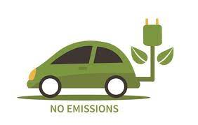

Electronic vehicles (EVs) and the reduction of gas emissions from vehicles play a pivotal role in addressing climate change and promoting environmental sustainability. Here are some key ways in which they contribute to a cleaner and greener future:
EVs produce no tailpipe emissions, eliminating harmful pollutants such as carbon dioxide (CO2), nitrogen oxides (NOx), and particulate matter during operation. This reduction in emissions helps combat climate change and improves air quality.
By eliminating direct emissions, EVs enhance air quality in urban areas, reducing smog and benefiting both human health and ecosystems.
As the electricity grid incorporates more renewable energy sources like solar and wind power, charging EVs with clean energy reduces the carbon footprint of transportation.
EVs are more energy-efficient than traditional internal combustion engine vehicles, converting a higher percentage of electrical energy into motion. This efficiency reduces overall energy consumption and lessens the strain on energy resources.
Even when considering the entire lifecycle of a vehicle, including manufacturing, operation, and disposal, EVs typically have a lower environmental impact compared to conventional gasoline vehicles. Ongoing advancements in battery technology and recycling processes enhance this advantage.
The shift to EVs decreases the demand for fossil fuels, reducing the need for extraction and processing activities. This helps conserve natural resources and minimizes habitat disruption.
The growing adoption of EVs is driving policy changes and incentives that promote sustainable transportation. Governments and organizations are offering tax credits, rebates, and infrastructure development to encourage EV use.
Reducing vehicle emissions, including carbon dioxide (CO2) and other greenhouse gases, helps mitigate climate change, curbing global warming, and its associated impacts.
Reduced gasoline use minimizes the potential for spills and contamination of water sources and soil, safeguarding vital natural resources.
Lowering emissions mitigates the harm to ecosystems and biodiversity caused by air and water pollution, supporting overall environmental health and stability.
The transition to electric vehicles, which produce less noise, contributes to quieter and more peaceful environments, benefiting both ecosystems and human well-being.
Encouraging alternatives to gasoline-powered vehicles, such as EVs, bicycles, public transit, and carpooling, promotes sustainable transportation options that reduce overall environmental impact and alleviate traffic congestion.
The reduction of vehicle emissions raises awareness about the environmental impacts of transportation. It encourages individuals, communities, and governments to take further steps toward sustainable practices and policies, creating a positive feedback loop for a more sustainable future.

In summary, the adoption of electric vehicles and the reduction of gas emissions from vehicles are crucial steps toward a cleaner and more sustainable future. They contribute to lower emissions, improved air quality, energy efficiency, natural resource conservation, and the promotion of environmental awareness and action. These efforts play a vital role in addressing climate change and environmental degradation, ensuring a healthier and more eco-friendly planet for future generations.